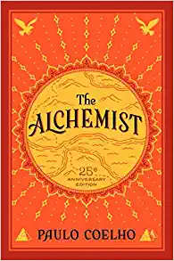
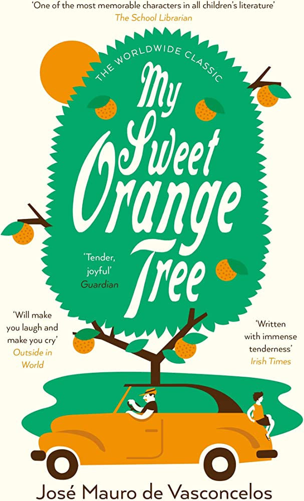
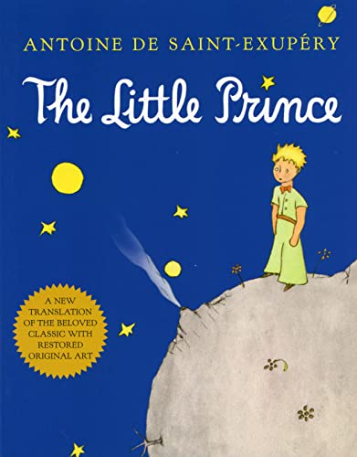

"The Alchemist" is a bestselling novel by Brazilian author Paulo Coelho. It tells the story of Santiago, a shepherd boy from Andalusia, who embarks on a journey to the Egyptian desert to find a treasure that he has dreamt of. Along the way, he meets a series of individuals, including an alchemist who teaches him about the importance of following his dreams and listening to his heart. Throughout the story, Santiago learns to trust in the universe and its signs, discovering that everything in life is connected and that each person has a unique purpose. He learns to embrace the present moment and appreciate the beauty of the world around him, even in the face of adversity. The novel is a metaphor for the journey of life and the pursuit of one's dreams, illustrating the importance of courage, faith, and persistence. It has inspired millions of readers around the world with its message of hope and self-discovery. "The Alchemist" is a timeless classic that reminds us to follow our hearts and trust in the universe, even when the path ahead is uncertain. It is a story that encourages us to embrace the journey of life and to appreciate the beauty of the world around us.
My Sweet Orange Tree is a novel by Brazilian author José Mauro de Vasconcelos, published in 1968. The book tells the story of a five-year-old boy named Zezé who lives in poverty in Brazil with his family. Zezé finds solace in his friendship with a small orange tree, which he calls "Xururuca". The novel follows Zezé's adventures as he navigates life in his impoverished community and deals with an abusive father. Throughout the book, Zezé uses his imagination and friendship with Xururuca to cope with the challenges he faces. As the story progresses, Zezé's father loses his job and the family is forced to move to a different city. Zezé is heartbroken at the thought of leaving Xururuca behind, but with the help of his older brother, he is able to transplant the tree to their new home. "My Sweet Orange Tree" is a coming-of-age story that explores themes of poverty, family, and the power of imagination. It has become a beloved classic in Brazil and has been translated into several languages.
"The Little Prince" by Antoine de Saint-Exupéry is a timeless tale that has captured the hearts of readers of all ages for generations. The story follows a young boy from another planet who sets out on a journey across the universe, eventually landing on Earth. Along the way, he meets a number of strange and interesting characters, including a pilot who has crashed in the Sahara desert. The story is a beautiful and poignant exploration of human nature, and the importance of imagination, friendship, and love. It touches on themes of loneliness, loss, and the beauty of the world around us. The little prince teaches the pilot about the meaning of life, and the importance of looking beyond the surface to find what is truly important. At its core, "The Little Prince" is a meditation on the human condition, and a reminder of the importance of holding on to the childlike wonder that we all once had. It speaks to the power of imagination and the ability to see the world through the eyes of a child, and reminds us that the most important things in life are often the simplest. Through its unforgettable characters and beautiful language, the book continues to inspire readers around the world to this day, and will likely continue to do so for many years to come.
